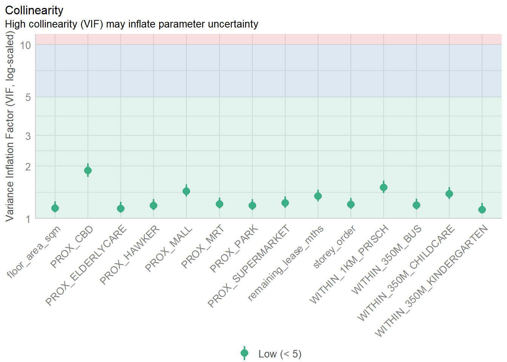
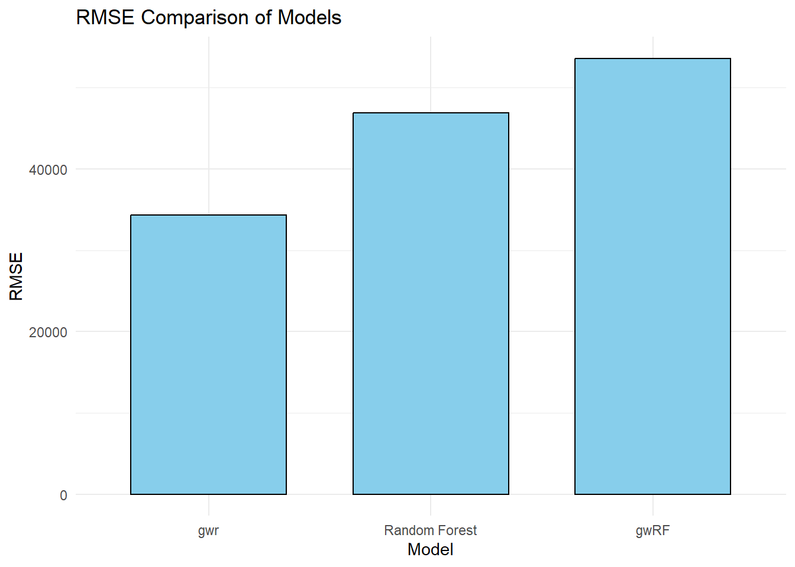
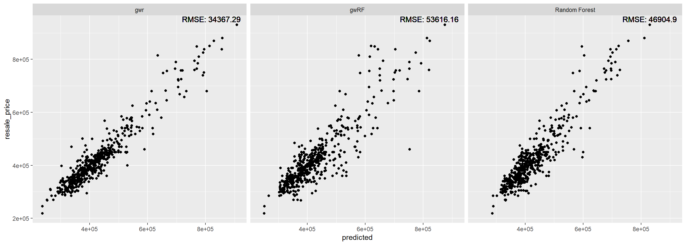
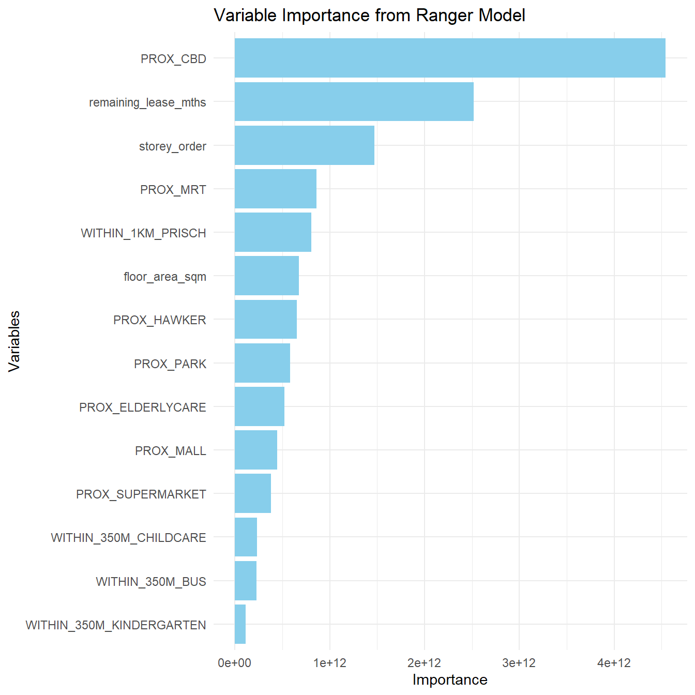

pacman::p_load(sf, spdep, GWmodel, SpatialML,
tmap, rsample, yardstick, tidyverse,
knitr, kableExtra, spatialRF)In Class Exercise 12
Loading Packages
Data Preparation
Importing RDS File
mdata <- read_rds("data/rds/mdata.rds")Data Sampling
set.seed(1234)
HDB_sample <- mdata %>%
sample_n(1500)Checking for Overlaps
overlapping_points <- HDB_sample %>%
mutate(overlap = lengths(st_equals(., .)) > 1)
summary(overlapping_points$overlap) Mode FALSE TRUE
logical 1047 453 Spatial Jitter
HDB_sample <- HDB_sample %>%
st_jitter(amount = 1)Data Sampling
set.seed(1234)
resale_split <- initial_split(HDB_sample,
prop = 6.67/10,)
train_data <- training(resale_split)
test_data <- testing(resale_split)write_rds(train_data, "data/rds/train_data.rds")
write_rds(test_data, "data/rds/test_data.rds")Multicollinearity Check
mdata_nogeo <- mdata %>%
st_drop_geometry()
ggstatsplot::ggcorrmat(mdata_nogeo[, 2:17])
Building Non-Spatial Multiple Linear Regression
price_mlr <- lm(resale_price ~ floor_area_sqm +
storey_order + remaining_lease_mths +
PROX_CBD + PROX_ELDERLYCARE + PROX_HAWKER +
PROX_MRT + PROX_PARK + PROX_MALL +
PROX_SUPERMARKET + WITHIN_350M_KINDERGARTEN +
WITHIN_350M_CHILDCARE + WITHIN_350M_BUS +
WITHIN_1KM_PRISCH,
data=train_data)
olsrr::ols_regress(price_mlr) Model Summary
--------------------------------------------------------------------------
R 0.862 RMSE 60813.316
R-Squared 0.742 MSE 3754578098.252
Adj. R-Squared 0.739 Coef. Var 14.255
Pred R-Squared 0.734 AIC 24901.005
MAE 45987.256 SBC 24979.529
--------------------------------------------------------------------------
RMSE: Root Mean Square Error
MSE: Mean Square Error
MAE: Mean Absolute Error
AIC: Akaike Information Criteria
SBC: Schwarz Bayesian Criteria
ANOVA
-------------------------------------------------------------------------------
Sum of
Squares DF Mean Square F Sig.
-------------------------------------------------------------------------------
Regression 1.065708e+13 14 761220078101.236 202.745 0.0000
Residual 3.698259e+12 985 3754578098.252
Total 1.435534e+13 999
-------------------------------------------------------------------------------
Parameter Estimates
------------------------------------------------------------------------------------------------------------------
model Beta Std. Error Std. Beta t Sig lower upper
------------------------------------------------------------------------------------------------------------------
(Intercept) 115703.696 34303.409 3.373 0.001 48387.533 183019.860
floor_area_sqm 2778.618 292.262 0.165 9.507 0.000 2205.089 3352.146
storey_order 12698.165 1070.950 0.211 11.857 0.000 10596.559 14799.771
remaining_lease_mths 350.252 14.596 0.450 23.997 0.000 321.610 378.894
PROX_CBD -16225.588 630.092 -0.572 -25.751 0.000 -17462.065 -14989.110
PROX_ELDERLYCARE -11330.930 3220.845 -0.061 -3.518 0.000 -17651.436 -5010.423
PROX_HAWKER -19964.070 4021.046 -0.087 -4.965 0.000 -27854.872 -12073.268
PROX_MRT -39652.516 5412.288 -0.130 -7.326 0.000 -50273.456 -29031.577
PROX_PARK -15878.322 4609.199 -0.061 -3.445 0.001 -24923.300 -6833.344
PROX_MALL -15910.922 6438.111 -0.048 -2.471 0.014 -28544.911 -3276.933
PROX_SUPERMARKET -18928.514 13304.965 -0.025 -1.423 0.155 -45037.848 7180.821
WITHIN_350M_KINDERGARTEN 9309.735 2024.293 0.079 4.599 0.000 5337.313 13282.157
WITHIN_350M_CHILDCARE -1619.514 1180.948 -0.026 -1.371 0.171 -3936.977 697.948
WITHIN_350M_BUS -447.695 738.715 -0.011 -0.606 0.545 -1897.331 1001.940
WITHIN_1KM_PRISCH -10698.012 1543.511 -0.138 -6.931 0.000 -13726.960 -7669.065
------------------------------------------------------------------------------------------------------------------Multicollinearity Check with VIF
vif <- performance::check_collinearity(price_mlr)
kable(vif,
caption = "Variance Inflation Factor (VIF) Results") %>%
kable_styling(font_size = 18) | Term | VIF | VIF_CI_low | VIF_CI_high | SE_factor | Tolerance | Tolerance_CI_low | Tolerance_CI_high |
|---|---|---|---|---|---|---|---|
| floor_area_sqm | 1.146686 | 1.085743 | 1.250945 | 1.070834 | 0.8720785 | 0.7993954 | 0.9210287 |
| storey_order | 1.206020 | 1.135720 | 1.312734 | 1.098189 | 0.8291736 | 0.7617690 | 0.8804986 |
| remaining_lease_mths | 1.343645 | 1.254833 | 1.463410 | 1.159157 | 0.7442440 | 0.6833358 | 0.7969186 |
| PROX_CBD | 1.887898 | 1.733977 | 2.074096 | 1.374008 | 0.5296898 | 0.4821378 | 0.5767088 |
| PROX_ELDERLYCARE | 1.140418 | 1.080572 | 1.244716 | 1.067904 | 0.8768712 | 0.8033960 | 0.9254357 |
| PROX_HAWKER | 1.183865 | 1.116887 | 1.289223 | 1.088056 | 0.8446907 | 0.7756609 | 0.8953457 |
| PROX_MRT | 1.211390 | 1.140307 | 1.318485 | 1.100632 | 0.8254980 | 0.7584464 | 0.8769566 |
| PROX_PARK | 1.186122 | 1.118797 | 1.291599 | 1.089092 | 0.8430839 | 0.7742340 | 0.8938169 |
| PROX_MALL | 1.435504 | 1.335252 | 1.565736 | 1.198125 | 0.6966193 | 0.6386771 | 0.7489224 |
| PROX_SUPERMARKET | 1.226727 | 1.153448 | 1.335000 | 1.107577 | 0.8151773 | 0.7490638 | 0.8669656 |
| WITHIN_350M_KINDERGARTEN | 1.123989 | 1.067172 | 1.228865 | 1.060183 | 0.8896886 | 0.8137594 | 0.9370564 |
| WITHIN_350M_CHILDCARE | 1.387119 | 1.292841 | 1.511748 | 1.177760 | 0.7209189 | 0.6614860 | 0.7734902 |
| WITHIN_350M_BUS | 1.193498 | 1.125056 | 1.299398 | 1.092473 | 0.8378731 | 0.7695869 | 0.8888447 |
| WITHIN_1KM_PRISCH | 1.508943 | 1.399770 | 1.647930 | 1.228390 | 0.6627154 | 0.6068219 | 0.7144029 |
Plotting VIF
plot(vif) +
theme(axis.text.x = element_text(angle = 45, hjust = 1))Variable `Component` is not in your data frame :/
Predictive Modelling with gwr
Computing bw
gwr_bw_train_ad <- bw.gwr(resale_price ~ floor_area_sqm +
storey_order + remaining_lease_mths +
PROX_CBD + PROX_ELDERLYCARE + PROX_HAWKER +
PROX_MRT + PROX_PARK + PROX_MALL +
PROX_SUPERMARKET + WITHIN_350M_KINDERGARTEN +
WITHIN_350M_CHILDCARE + WITHIN_350M_BUS +
WITHIN_1KM_PRISCH,
data=train_data,
approach="CV",
kernel="gaussian",
adaptive=TRUE,
longlat=FALSE)Adaptive bandwidth: 625 CV score: 3.459022e+12
Adaptive bandwidth: 394 CV score: 3.231824e+12
Adaptive bandwidth: 250 CV score: 2.914787e+12
Adaptive bandwidth: 162 CV score: 2.610975e+12
Adaptive bandwidth: 107 CV score: 2.240102e+12
Adaptive bandwidth: 73 CV score: 1.971693e+12
Adaptive bandwidth: 52 CV score: 1.797415e+12
Adaptive bandwidth: 39 CV score: 1.659617e+12
Adaptive bandwidth: 31 CV score: 1.573855e+12
Adaptive bandwidth: 26 CV score: 1.550365e+12
Adaptive bandwidth: 23 CV score: 1.543003e+12
Adaptive bandwidth: 21 CV score: 1.520091e+12
Adaptive bandwidth: 19 CV score: 1.516242e+12
Adaptive bandwidth: 19 CV score: 1.516242e+12 gwr_bw_train_ad[1] 19write_rds(gwr_bw_train_ad, "data/model/gwr_bw_train_ad.rds")Model Calibration
gwr_ad <- gwr.basic(formula = resale_price ~ floor_area_sqm +
storey_order + remaining_lease_mths +
PROX_CBD + PROX_ELDERLYCARE + PROX_HAWKER +
PROX_MRT + PROX_PARK + PROX_MALL +
PROX_SUPERMARKET + WITHIN_350M_KINDERGARTEN +
WITHIN_350M_CHILDCARE + WITHIN_350M_BUS +
WITHIN_1KM_PRISCH,
data=train_data,
bw=20,
kernel = 'gaussian',
adaptive=TRUE,
longlat = FALSE)Model output
gwr_ad ***********************************************************************
* Package GWmodel *
***********************************************************************
Program starts at: 2024-11-23 00:50:53.182344
Call:
gwr.basic(formula = resale_price ~ floor_area_sqm + storey_order +
remaining_lease_mths + PROX_CBD + PROX_ELDERLYCARE + PROX_HAWKER +
PROX_MRT + PROX_PARK + PROX_MALL + PROX_SUPERMARKET + WITHIN_350M_KINDERGARTEN +
WITHIN_350M_CHILDCARE + WITHIN_350M_BUS + WITHIN_1KM_PRISCH,
data = train_data, bw = 20, kernel = "gaussian", adaptive = TRUE,
longlat = FALSE)
Dependent (y) variable: resale_price
Independent variables: floor_area_sqm storey_order remaining_lease_mths PROX_CBD PROX_ELDERLYCARE PROX_HAWKER PROX_MRT PROX_PARK PROX_MALL PROX_SUPERMARKET WITHIN_350M_KINDERGARTEN WITHIN_350M_CHILDCARE WITHIN_350M_BUS WITHIN_1KM_PRISCH
Number of data points: 1000
***********************************************************************
* Results of Global Regression *
***********************************************************************
Call:
lm(formula = formula, data = data)
Residuals:
Min 1Q Median 3Q Max
-167624 -37265 -415 34811 224601
Coefficients:
Estimate Std. Error t value Pr(>|t|)
(Intercept) 115703.7 34303.4 3.373 0.000773 ***
floor_area_sqm 2778.6 292.3 9.507 < 2e-16 ***
storey_order 12698.2 1071.0 11.857 < 2e-16 ***
remaining_lease_mths 350.2 14.6 23.997 < 2e-16 ***
PROX_CBD -16225.6 630.1 -25.751 < 2e-16 ***
PROX_ELDERLYCARE -11330.9 3220.8 -3.518 0.000455 ***
PROX_HAWKER -19964.1 4021.1 -4.965 8.10e-07 ***
PROX_MRT -39652.5 5412.3 -7.326 4.92e-13 ***
PROX_PARK -15878.3 4609.2 -3.445 0.000595 ***
PROX_MALL -15910.9 6438.1 -2.471 0.013628 *
PROX_SUPERMARKET -18928.5 13305.0 -1.423 0.155150
WITHIN_350M_KINDERGARTEN 9309.7 2024.3 4.599 4.80e-06 ***
WITHIN_350M_CHILDCARE -1619.5 1181.0 -1.371 0.170572
WITHIN_350M_BUS -447.7 738.7 -0.606 0.544624
WITHIN_1KM_PRISCH -10698.0 1543.5 -6.931 7.55e-12 ***
---Significance stars
Signif. codes: 0 '***' 0.001 '**' 0.01 '*' 0.05 '.' 0.1 ' ' 1
Residual standard error: 61270 on 985 degrees of freedom
Multiple R-squared: 0.7424
Adjusted R-squared: 0.7387
F-statistic: 202.7 on 14 and 985 DF, p-value: < 2.2e-16
***Extra Diagnostic information
Residual sum of squares: 3.698259e+12
Sigma(hat): 60874.22
AIC: 24901.01
AICc: 24901.56
BIC: 24090.05
***********************************************************************
* Results of Geographically Weighted Regression *
***********************************************************************
*********************Model calibration information*********************
Kernel function: gaussian
Adaptive bandwidth: 20 (number of nearest neighbours)
Regression points: the same locations as observations are used.
Distance metric: Euclidean distance metric is used.
****************Summary of GWR coefficient estimates:******************
Min. 1st Qu. Median 3rd Qu.
Intercept -1647495.07 -203039.46 21050.95 251275.08
floor_area_sqm -2149.12 1268.92 2048.29 3326.85
storey_order 3365.00 8129.33 10361.19 13742.14
remaining_lease_mths -484.21 344.48 422.92 500.81
PROX_CBD -97888.12 -23044.49 -10750.13 -1326.37
PROX_ELDERLYCARE -255826.00 -25292.82 -5741.24 17547.84
PROX_HAWKER -213461.39 -35563.31 -10817.70 20192.39
PROX_MRT -296189.93 -92629.43 -54837.40 -20559.78
PROX_PARK -219213.06 -33419.69 -16548.03 8386.74
PROX_MALL -256659.93 -34619.62 5989.58 47120.69
PROX_SUPERMARKET -174402.95 -42360.00 -6384.64 30924.51
WITHIN_350M_KINDERGARTEN -41748.94 -8647.88 -2507.24 5252.70
WITHIN_350M_CHILDCARE -14443.49 -2184.58 1408.12 3549.91
WITHIN_350M_BUS -10071.24 -1732.17 523.22 2243.22
WITHIN_1KM_PRISCH -50154.85 -3829.51 348.36 4939.32
Max.
Intercept 1318816.00
floor_area_sqm 7805.67
storey_order 26793.01
remaining_lease_mths 712.27
PROX_CBD 114697.16
PROX_ELDERLYCARE 178899.93
PROX_HAWKER 134635.39
PROX_MRT 118801.84
PROX_PARK 88669.56
PROX_MALL 321779.25
PROX_SUPERMARKET 168573.21
WITHIN_350M_KINDERGARTEN 40627.22
WITHIN_350M_CHILDCARE 15751.11
WITHIN_350M_BUS 11712.81
WITHIN_1KM_PRISCH 30401.51
************************Diagnostic information*************************
Number of data points: 1000
Effective number of parameters (2trace(S) - trace(S'S)): 403.5544
Effective degrees of freedom (n-2trace(S) + trace(S'S)): 596.4456
AICc (GWR book, Fotheringham, et al. 2002, p. 61, eq 2.33): 24082.29
AIC (GWR book, Fotheringham, et al. 2002,GWR p. 96, eq. 4.22): 23420.43
BIC (GWR book, Fotheringham, et al. 2002,GWR p. 61, eq. 2.34): 24371.42
Residual sum of squares: 624405293006
R-square value: 0.9565036
Adjusted R-square value: 0.9270246
***********************************************************************
Program stops at: 2024-11-23 00:50:54.314809 Computing Test Data bw
gwr_bw_test_ad <- bw.gwr(resale_price ~ floor_area_sqm +
storey_order + remaining_lease_mths +
PROX_CBD + PROX_ELDERLYCARE + PROX_HAWKER +
PROX_MRT + PROX_PARK + PROX_MALL +
PROX_SUPERMARKET + WITHIN_350M_KINDERGARTEN +
WITHIN_350M_CHILDCARE + WITHIN_350M_BUS +
WITHIN_1KM_PRISCH,
data=test_data,
approach="CV",
kernel="gaussian",
adaptive=TRUE,
longlat=FALSE)write_rds(gwr_bw_test_ad,
"data/model/gwr_bw_test_ad.rds")Predicting with Test Data
gwr_pred <- gwr.predict(formula = resale_price ~ floor_area_sqm +
storey_order + remaining_lease_mths + PROX_CBD +
PROX_ELDERLYCARE + PROX_HAWKER + PROX_MRT +
PROX_PARK + PROX_MALL + PROX_SUPERMARKET +
WITHIN_350M_KINDERGARTEN + WITHIN_350M_CHILDCARE +
WITHIN_350M_BUS + WITHIN_1KM_PRISCH,
data=train_data,
predictdata = test_data,
bw=20,
kernel = 'gaussian',
adaptive=TRUE,
longlat = FALSE)Saving Predicted Values
gwr_pred_df <-as.data.frame(
gwr_pred$SDF$prediction) %>%
rename(gwr_pred = "gwr_pred$SDF$prediction")Predictive Modelling with RF
Data Preparation
coords <- st_coordinates(HDB_sample)
coords_train <- st_coordinates(train_data)
coords_test <- st_coordinates(test_data)train_data_nogeom <- train_data %>%
st_drop_geometry()Calibrating RF Model
set.seed(1234)
rf <- ranger(resale_price ~ floor_area_sqm + storey_order +
remaining_lease_mths + PROX_CBD + PROX_ELDERLYCARE +
PROX_HAWKER + PROX_MRT + PROX_PARK + PROX_MALL +
PROX_SUPERMARKET + WITHIN_350M_KINDERGARTEN +
WITHIN_350M_CHILDCARE + WITHIN_350M_BUS +
WITHIN_1KM_PRISCH,
data=train_data_nogeom)Model Output
rfRanger result
Call:
ranger(resale_price ~ floor_area_sqm + storey_order + remaining_lease_mths + PROX_CBD + PROX_ELDERLYCARE + PROX_HAWKER + PROX_MRT + PROX_PARK + PROX_MALL + PROX_SUPERMARKET + WITHIN_350M_KINDERGARTEN + WITHIN_350M_CHILDCARE + WITHIN_350M_BUS + WITHIN_1KM_PRISCH, data = train_data_nogeom)
Type: Regression
Number of trees: 500
Sample size: 1000
Number of independent variables: 14
Mtry: 3
Target node size: 5
Variable importance mode: none
Splitrule: variance
OOB prediction error (MSE): 2289284270
R squared (OOB): 0.8406868 Preparing Test Data
test_data_nogeom <- cbind(
test_data, coords_test) %>%
st_drop_geometry()Predicting with RF
rf_pred <- predict(rf,
data = test_data_nogeom)Saving Predicted Values
rf_pred_df <- as.data.frame(rf_pred$predictions) %>%
rename(rf_pred = "rf_pred$predictions")grf_ad <- grf(resale_price ~ floor_area_sqm +
storey_order + remaining_lease_mths +
PROX_CBD + PROX_ELDERLYCARE + PROX_HAWKER +
PROX_MRT + PROX_PARK + PROX_MALL +
PROX_SUPERMARKET + WITHIN_350M_KINDERGARTEN +
WITHIN_350M_CHILDCARE + WITHIN_350M_BUS + WITHIN_1KM_PRISCH,
dframe = train_data_nogeom,
bw=20,
kernel="adaptive",
coords=coords_train)
Number of Observations: 1000Number of Independent Variables: 14Kernel: Adaptive
Neightbours: 20
--------------- Global ML Model Summary ---------------Ranger result
Call:
ranger(resale_price ~ floor_area_sqm + storey_order + remaining_lease_mths + PROX_CBD + PROX_ELDERLYCARE + PROX_HAWKER + PROX_MRT + PROX_PARK + PROX_MALL + PROX_SUPERMARKET + WITHIN_350M_KINDERGARTEN + WITHIN_350M_CHILDCARE + WITHIN_350M_BUS + WITHIN_1KM_PRISCH, data = train_data_nogeom, num.trees = 500, mtry = 4, importance = "impurity", num.threads = NULL)
Type: Regression
Number of trees: 500
Sample size: 1000
Number of independent variables: 14
Mtry: 4
Target node size: 5
Variable importance mode: impurity
Splitrule: variance
OOB prediction error (MSE): 2086962998
R squared (OOB): 0.8547665
Importance: floor_area_sqm storey_order remaining_lease_mths
6.767780e+11 1.470993e+12 2.516452e+12
PROX_CBD PROX_ELDERLYCARE PROX_HAWKER
4.543871e+12 5.202434e+11 6.545631e+11
PROX_MRT PROX_PARK PROX_MALL
8.624890e+11 5.828225e+11 4.434549e+11
PROX_SUPERMARKET WITHIN_350M_KINDERGARTEN WITHIN_350M_CHILDCARE
3.810986e+11 1.149449e+11 2.338211e+11
WITHIN_350M_BUS WITHIN_1KM_PRISCH
2.251842e+11 8.079436e+11
Mean Square Error (Not OOB): 397461053.639R-squared (Not OOB) %: 97.231AIC (Not OOB): 19830.608AICc (Not OOB): 19831.095
--------------- Local Model Summary ---------------
Residuals OOB: Min. 1st Qu. Median Mean 3rd Qu. Max.
-290000.0 -22215.2 905.0 -746.9 20462.3 275662.5
Residuals Predicted (Not OOB): Min. 1st Qu. Median Mean 3rd Qu. Max.
-38505.22 -2770.36 24.16 47.37 2987.97 43840.08
Local Variable Importance: Min Max Mean StD
floor_area_sqm 0 93278995599 6575744545 12087922969
storey_order 34870318 174192955121 6812649419 17451724590
remaining_lease_mths 137897472 132095808248 17007211910 27837303576
PROX_CBD 107422840 87057329406 7793599342 12422904648
PROX_ELDERLYCARE 166010587 59355605707 6335757687 9912058314
PROX_HAWKER 78690036 78319125471 5982025240 10140455465
PROX_MRT 154545089 117772655204 7301323479 14418114776
PROX_PARK 174698746 93581529085 6265426129 12030113423
PROX_MALL 141570815 111699299922 8063115561 14793304208
PROX_SUPERMARKET 116967870 69193972053 5138917276 8445851637
WITHIN_350M_KINDERGARTEN 0 44304708703 1696038416 3938936793
WITHIN_350M_CHILDCARE 28472212 114902583686 4307184763 10530916242
WITHIN_350M_BUS 43429224 80697474507 3258806210 6312297041
WITHIN_1KM_PRISCH 0 29155224346 1919773202 3583137467
Mean squared error (OOB): 2745834471.466R-squared (OOB) %: 80.872AIC (OOB): 21763.351AICc (OOB): 21763.839Mean squared error Predicted (Not OOB): 56937099.82R-squared Predicted (Not OOB) %: 99.603AIC Predicted (Not OOB): 17887.458AICc Predicted (Not OOB): 17887.946
Calculation time (in seconds): 29.4448Predicting with Test Data
grf_pred <- predict.grf(grf_ad,
test_data_nogeom,
x.var.name="X",
y.var.name="Y",
local.w=1,
global.w=0)Saving Predicted Values
grf_pred_df <- as.data.frame(grf_pred)Model Comparison
Combine Model Outputs
test_data_pred <- test_data %>%
select(resale_price) %>%
cbind(gwr_pred_df) %>%
cbind(rf_pred_df) %>%
cbind(grf_pred_df)Transposing Data
test_longer <- test_data_pred %>%
st_drop_geometry() %>%
pivot_longer(cols = ends_with("pred"),
names_to = "model",
values_to = "predicted")Renaming
model_labels <- c(
gwr_pred = "gwr",
rf_pred = "Random Forest",
grf_pred = "gwRF")
test_longer <- test_longer %>%
mutate(model = recode(
model, !!!model_labels))Computing RMSE
rmse_results <- test_longer %>%
group_by(model) %>%
rmse(truth = resale_price,
estimate = predicted) %>%
rename(rmse = .estimate) %>%
select(model, rmse)Model Comparison Visualization
Bar Chart
ggplot(rmse_results,
aes(x = reorder(model, rmse),
y = rmse,
fill = "skyblue")) +
geom_bar(stat = "identity",
fill = "skyblue",
color = "black",
width = 0.7) +
labs(title = "RMSE Comparison of Models",
y = "RMSE",
x = "Model") +
theme_minimal()
Scatter Plots
test_longer <- test_longer %>%
left_join(rmse_results,
by = "model")
ggplot(data = test_longer,
aes(x = predicted,
y = resale_price)) +
facet_wrap(~ model) +
geom_point() +
geom_text(data = test_longer,
aes(x = Inf, y = Inf,
label = paste("RMSE:", round(rmse, 2))),
hjust = 1.1, vjust = 1.1,
color = "black", size = 4)
Variable Importance
Preparing Output
var_imp <- data.frame(
Variable = names(grf_ad$Global.Model$variable.importance),
Importance = grf_ad$Global.Model$variable.importance
)ggplot(var_imp, aes(x = reorder(Variable,
Importance),
y = Importance)) +
geom_bar(stat = "identity",
fill = "skyblue") +
coord_flip() +
labs(
title = "Variable Importance from Ranger Model",
x = "Variables",
y = "Importance"
) +
theme_minimal()